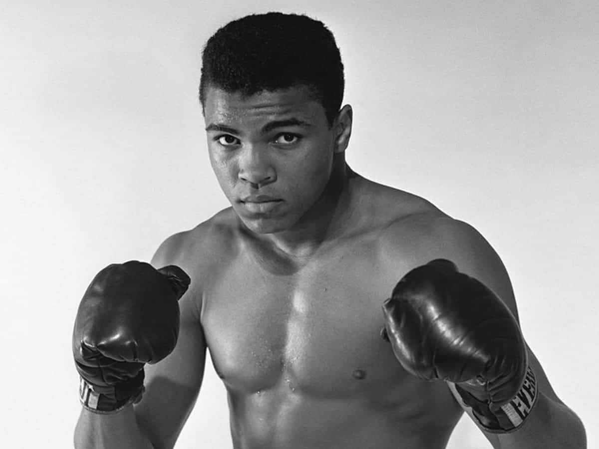

The Greatest - Muhammad Ali

The Greatest - Muhammad Ali
Muhammad Ali (January 17, 1942 – June 3, 2016) was an American professional boxer and activist. Nicknamed "the Greatest", he is regarded as one of the most significant sports figures of the 20th century and is often regarded as the greatest heavyweight boxer of all time.
Born and raised in Louisville, Kentucky, he began training as an amateur boxer at age 12. At 18, he won a gold medal in the light heavyweight division at the 1960 Summer Olympics and turned professional later that year. He converted to Islam after 1961.
Career
He won the world heavyweight championship, defeating Sonny Liston in a major upset on February 25, 1964, at age 22. During that year, he denounced his birth name as a "slave name" and formally changed his name to Muhammad Ali. In 1966, Ali refused to be drafted into the military owing to his religious beliefs and ethical opposition to the Vietnam War and was found guilty of draft evasion and stripped of his boxing titles. He stayed out of prison while appealing the decision to the Supreme Court, where his conviction was overturned in 1971. He did not fight for nearly four years and lost a period of peak performance as an athlete. Ali's actions as a conscientious objector to the Vietnam War made him an icon for the larger counterculture of the 1960s generation,and he was a very high-profile figure of racial pride for African Americans during the civil rights movement and throughout his career.
He fought in several historic boxing matches, including his highly publicized fights with Sonny Liston, Joe Frazier (including the Fight of the Century, the biggest boxing event up until then),the Thrilla in Manila, and his fight with George Foreman in The Rumble in the Jungle.
Ali thrived in the spotlight at a time when many boxers let their managers do the talking, and he became renowned for his provocative and outlandish persona.He was famous for trash-talking, often free-styled with rhyme schemes and spoken word poetry, and has been recognized as a pioneer in hip hop. He often predicted in which round he would knock out his opponent.